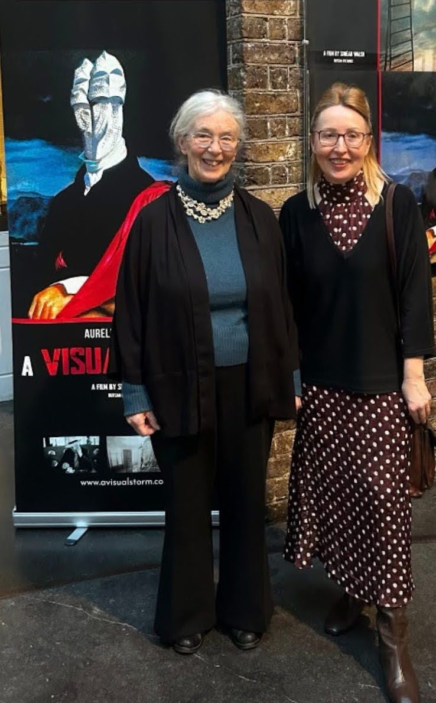
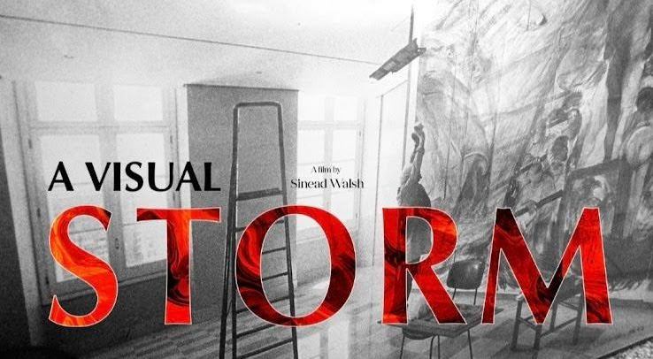
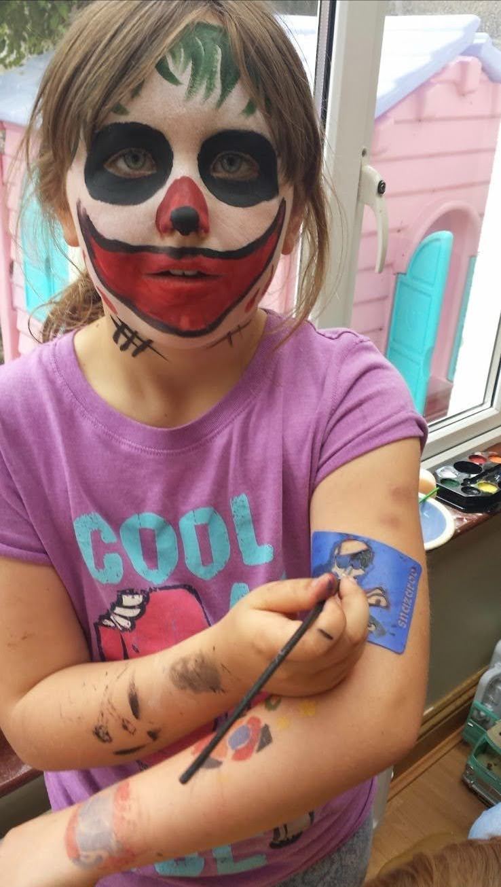
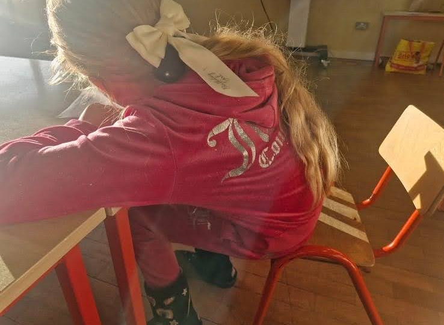
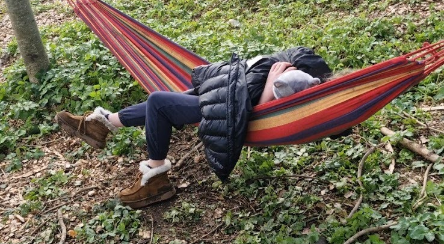

Film & Documentary Work
Screenings, panels, and project highlights


Filmmaker • Educator • Storyteller

Watch A Visual Storm - Aurelio CaminatiScreenings, panels, and project highlights

Behind the scenes working with children



Creating compelling narratives that connect through authentic emotional stories.
Thorough research approach used to develop meaningful and impactful projects.
Directing projects that place real people and their experiences at the centre.
Leading creative projects specialising in documentaries, technical films, and commercials with social impact.
Primary and Special Education Teacher, integrating creative methodologies in specialized learning environments.
National Transport Authority: Creative perspective on national transport policy and accessibility initiatives.
Active member of Trinity Video Company Society, founded by Lenny Abrahamson.
Developing expertise in emerging digital technologies and high-end media production.
Assistant Lecturer in Film & Media, bridging the gap between cinema and academia.
Voluntary work documenting access needs for persons with disabilities in public transport.
Using filmmaking skills to highlight social issues and awareness about accessibility challenges.
Committed to planet protection and wildlife restoration through documentary work.